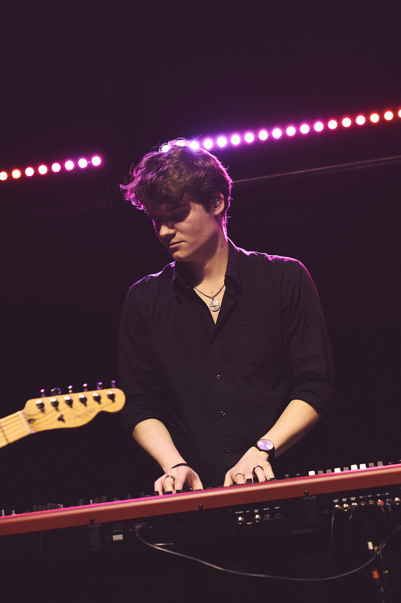

Kilian Seibl, also known as Skili, was born on October 4th, 2002, in St. Johann in Tirol. He began his first music lessons at the age of 5, starting with the recorder. Quickly bored of it, he moved on to the keyboard at age 7 and received professional lessons, learning many pieces and music theory for exams. At 14, he switched from keyboard to piano and received mentoring in classical music and jazz. At 15, he attended a school with a music focus but was disappointed by the limited openness to other styles. Through friends, he co-founded the band "Burning Water" and produced his first Pop/Rock songs.
In parallel, he discovered a passion for filming and video editing. Later, he focused on music production to compose and produce his own tracks for videos and films. This led to a deep passion for electronic music, which he continues to produce and perform live. Around 16 he started to learn how to DJ and played his first gigs at friend's birthday parties. The parties got bigger, as they started organizing their own events in Kitzbühel.
As soon as Kilian turned 19 years old, he moved to Vienna in order to study music production at the Vienna Music Institue. Making many new friends and connections in Austria's capital city, he decided to stay there after finishing his studies with excellent success. He picked up DJing again at the age of 22 and started playing in many clubs and bars in Vienna, including the O-Klub, Babenberger Passage, Hannelore and Kleinod am Ring, to name a few. He also played first support shows for internationally acclaimed artists like Sam Feldt, Alle Farben, Faul & Wad, Eran Hersh, Vanco, Kurd Maverick and Divolly & Markward.
The extended list of all venues and events Skili has played so far can be found here:
- O Klub Vienna
- Babenberger Passage Vienna (Residency)
- Hannelore Wien (Residency) (Support für Alle Farben)
- Kleinod am Ring (Residency)
- Kleinod Prunkstück (Residency)
- El Ey X (Support Faul & Wad, Kurd Maverick)
- Lilly Beach House (Support für Vanco)
- Le Club Francais (Österreichische Kinderkrebshilfe Charity Event)
- Spelunke Wien (Residency) (Support für Sam Feldt)
- Lamée Rooftop (Residency)
- Cucini Wien
- La Dorèe Wien
- Glückskind Wien
- Brooklyn Horn Niederösterreich
- Palais Wertheim Wien
- JUWEL Wien
- Pfeilheim Partys Wien
- Snow Volleyball European Tour Wagrain 2022
- Porsche Kongress Center Zell am See
- Radio Energy Extravadance Sets
- Wolke 1090 Wien
- Charlotte Fresenius Hochschule Semesterpartys
